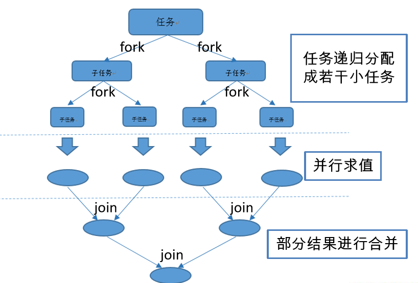

本文转载自：Java8 新特性
前言
北京时间2018年9月26日，Oracle官方发布Java 11。既然版本都更新到11了，现在才来学8是不是太晚了？其实不是的，目前应该大部分都还是使用的Java 7和Java 8，这两个应该还是主流。而Java 8 又有一些激动人心的新特性，所以还是值得学习的。Java 8 新特性主要有以下几点：
- Lambda表达式(重点)；
- 函数式接口；
- 方法引用与构造器引用；
- Stream API(重点)；
- 接口中的默认方法与静态方法；
- 新时间日期API；
- 其他新特性。
有了以上新特性，Java 8就可以做到：
- 速度更快；
- 代码更少(增加了新的语法 Lambda 表达式)；
- 方便操作集合(Stream API)
- 便于并行；
- 最大化减少空指针异常 Optional。
接下来一起来了解一下Java 8的这些新特性。
Lambada表达式
1、什么是lambda？ Lambda 是一个匿名函数，我们可以把 Lambda 表达式理解为是一段可以传递的代码（将代码像数据一样进行传递）。可以写出更简洁、更灵活的代码。
2、了解新操作符： Java 8引入了新的操作符，->，叫箭头操作符或者叫lambda操作符。当使用lambda表达式时就需要使用这个操作符。
3、lambda表达式语法： 箭头操作符将lambda表达式分成了两部分：
- 左侧：
lambda表达式的参数列表(接口中抽象方法的参数列表) - 右侧：
lambda表达式中所需执行的功能(lambda体，对抽象方法的实现)
语法有如下几种格式：
- 语法格式一(无参数无返回值)： () -> 具体实现
- 语法格式二(有一个参数无返回值)： (x) -> 具体实现 或 x -> 具体实现
- 语法格式三(有多个参数，有返回值，并且lambda体中有多条语句)：(x,y) -> {具体实现}
- 语法格式四：若方法体只有一条语句，那么大括号和return都可以省略 注：lambda表达式的参数列表的参数类型可以省略不写，可以进行类型推断。
看几个例子： 例一：
1 | @Test |
创建一个线程，重写run方法，在run方法里面打印一句话。我们想要的就是System.out.println("hello world"+ num);这行代码，但是为了实现这行代码，不得不多写了好多行。lambda就可以解决这一点，看看用lambda如何实现:
1 | Runnable runnable1 = () -> System.out.println("hello world"+num); |
用lambda这样就搞定了。首先还是Runnable runnable1 =，但是不用new了，右边就用lambda实现。我们要使用的是该接口的run方法，run方法不需要参数，所以lambda表达式左边就是()，lambda表达式右边是抽象方法的实现，也就是第一种方式中run方法的方法体写到lambda表达式右边就可以了。
例二：
1 | Comparator<Integer> comparator = new Comparator<Integer>() { |
以前写一个比较器就要像上面那样写，先new比较器类，然后在其compare方法里写核心代码。用lambda实现：
1 | Comparator<Integer> comparator = (x,y) -> Integer.compare(x,y); |
compare方法需要两个参数，所以箭头操作符左边写(x,y)，右边是compare方法的实现，所以应该写return Integer.compare(o1,o2);，但是根据上面的语法格式四可知，return可以省略，因此就写成了上面那样。
通过这两个例子可以感受到lambda表达式的简洁，但是问题来了：我们说lambda表达式就是一个匿名函数，我们只需要指定参数和lambda体即可，那么它是如何判断重写的是哪个方法呢？比如一个接口中有多个方法，如果使用lambda表达式来写，那么如何判断我们使用的是该接口的哪个方法？其实是不能判断的！通过上面两个例子可以发现，Runnable接口和Comparator接口都是只有一个方法的接口，所以可以使用lambda。
函数式接口
1、什么是函数式接口？ 像Runnable和Comparator这样只有一个方法的接口，称为函数式接口。也可以在接口上加上@FunctionalInterface注解，如果编译通过，则该接口就是函数式接口。lambda表达式就需要函数式接口的支持。
2、看一个需求： 需求：需要对两个数进行加减乘除等运算，怎么实现？
- 传统做法：传统做法中，需要进行几种运算，我们就要写几个方法。一种运算对应一个方法。
- lambda做法：首先要定义一个函数式接口，接口中只有一个方法，接收两个参数。
1 | @FunctionalInterface |
然后就可以使用了：
1 | @Test |
所以用lambda的话，只需要定义一个函数式接口，不管进行什么操作，都可以用lambda解决，不用再一种运算对应一个方法。但是，还需要自己定义函数式接口，好像也没简单很多。Java考虑到这点了，所以内置了函数式接口。
3、四大内置函数式接口： 为了不需要我们自己定义函数式接口，Java内置了四大函数式接口，这四大接口加上它们的子类，完全满足我们的使用了。四大函数式接口是：
- Consumer
：消费型接口(void accept(T t))，接收一个参数，无返回值。 - Supplier
：供给型接口(T get())，无参数，有返回值。 - Function<T,R>：函数型接口(R apply(T t))，接收一个参数，有返回值。
- Predicate
：断言型接口(boolean test(T t))，接收一个参数，返回Boolean值。
4、四大函数式接口的使用： 接下来看看具体如何使用这四大函数式接口。
消费型接口的使用：
1 | Consumer consumer = (x) -> System.out.println("消费了"+x+"元"); |
供给型接口的使用：
1 | Supplier<Integer> supplier = () -> (int)(Math.random() * 100);//生成随机数 |
函数型接口的使用：
1 | Function<String,String> function = str -> str.toUpperCase();//将传入的字符串转成大写 |
断言型接口的使用：
1 | //需求：将满足条件的字符串添加到集合中去 |
方法引用与构造器引用
当要传递给Lambda体的操作，已经有实现的方法了，可以使用方法引用。不过实现抽象方法的参数列表，必须与引用方法的参数列表保持一致。
1、方法引用语法：
- 对象::实例方法
- 类::静态方法
- 类::实例方法
2、方法引用具体用法： 说了那么多可能还不清楚到底什么意思，一起来看几个例子。
语法一例子：
1 | Consumer<String> consumer = x -> System.out.println(x);//传统写法 |
println方法和Consumer的accept方法都是无返回值，接收一个参数，所以可以这样写。
语法二例子：
1 | Comparator<Integer> comparator = (x,y) -> Integer.compare(x,y); |
语法三例子：
1 | BiPredicate<String,String> biPredicate = (x,y) -> x.equals(y); |
3、构造器引用：
1 | Supplier<Employee> supplier = () -> new Employee(); |
Stream API
Stream 是 Java8 中处理集合的关键抽象概念，它可以指定你希望对集合进行的操作，可以执行非常复杂的查找、过滤和映射数据等操作。使用Stream API 对集合数据进行操作，就类似于使用 SQL 执行的数据库查询。也可以使用 Stream API 来并行执行操作。简而言之，Stream API 提供了一种高效且易于使用的处理数据的方式。
1、理解Stream: Stream被称作流，是用来处理集合以及数组的数据的。它有如下特点：
- Stream 自己不会存储元素。
- Stream 不会改变源对象。相反，他们会返回一个持有结果的新Stream。
- Stream 操作是延迟执行的。这意味着他们会等到需要结果的时候才执行。
2、使用Stream的三个步骤：
- 创建Stream：一个数据源（如：集合、数组），获取一个流
- 中间操作：一个中间操作链，对数据源的数据进行处理
- 终止操作：一个终止操作，执行中间操作链，并产生结果
3、创建Stream: 直接看代码：
1 | //1、通过集合提供的stream方法或parallelStream()方法创建 |
上面介绍了集合、数组创建流的几种方式，都有对应的注解。
4、中间操作： 筛选与切片：
- filter – 接收lambda，从流中排除某些数据。
- limit – 截断流，使其元素不超过给定数量。
- skip(n) – 跳过元素，返回一个扔掉了前n个元素的流，若不足n个元素，则返回空流。
- distinct – 筛选，通过流所生成元素的hashCode()和equals()去除重复元素,所以对象必须重新hashCode方法和equals方法。
看代码：
1 | employees.stream()//已有employees集合 |
映射：
- map – 接收lambda，将元素转换成其他形式或提取信息。接收一个函数作为参数，该函数会被应用到每个元素上，并将其映射成一个新的元素。
- flatMap – 接收一个函数作为参数，将流中的每个值都换成另一个流，然后把所以流连接成一个流。
看例子：
1 | List<String> list = Arrays.asList("aa","bb","cc","dd"); |
排序：
- sorted() – 自然排序(按照Comparable来排序)。
- sorted(Comparator com) – 定制排序(按照Comparator来排序)。
看例子：
1 | List<String> list = Arrays.asList("ccc","bbb","aaa","ddd"); |
5、终止操作： 查找与匹配：
- allMatch – 检查是否匹配所有元素。
- anyMatch – 检查是否至少匹配一个元素。
- noneMatch – 检查是否没有匹配所有元素。
- findFirst – 返回第一个元素。
- findAny – 返回当前流中任意元素。
- count – 返回流中元素总个数。
- max – 返回流中最大值。
- min – 返回流中最小值。
1 | //看看employee集合中是不是所有都是男的 |
规约：
- reduce(T identity,BinaryOperator) – 可以将流中元素反复结合起来，得到一个值。
1 | //规约求和 |
收集：
- collect – 将流转换为其他形式。接收一个Collector接口的实现，用于给Stream中元素做汇总的方法。
1 | //把公司中所有员工的姓名提取出来并收集到一个集合中去 |
并行流与串行流
1、fork/join框架： 此框架就是在必要的情况下，将一个大任务，进行拆分(fork)成若干个小任务（拆到不可再拆时），再将一个个的小任务运算的结果进行 join 汇总。

fork/join
2、并行流与串行流： 通过上面的图可以知道，使用fork/join框架可以提高效率(运算量越大越明显，运算量可能反而更慢，因为拆分也需要时间)，但是在Java 8之前需要自己实现fork/join，还是挺麻烦的，Java 8就方便多了，因为提供了并行流，底层就是使用了fork/join。Stream API 可以声明性地通过parallel()与 sequential() 在并行流与顺序流之间进行切换。
1 | @Test |
通过运行上面的程序可以明显感受到并行流的高效。
新时间日期API
Java 8之前的Date和Calendar都是线程不安全的，而且使用起来比较麻烦，Java 8提供了全新的时间日期API，LocalDate(日期)、LocalTime(时间)、LocalDateTime(时间和日期) 、Instant (时间戳)、Duration(用于计算两个“时间”间隔)、Period(用于计算两个“日期”间隔)等。
1、LocalDate、LocalTime、LocalDateTime： 这三个用法一样。
1 | //获取当前系统时间 |
2、Instant 时间戳： 时间戳就是计算机读的时间，它是以Unix元年(传统的设定为UTC时区1970年1月1日午夜时分)开始算起的。
1 | //计算机读的时间：时间戳(Instant)，1970年1月1日0时0分0秒到此时的毫秒值 |
3、Duration 和 Period：
1 | LocalTime localTime = LocalTime.now(); |
4、时间校正器(TemporalAdjuster)：
1 | LocalDateTime localDateTime = LocalDateTime.now(); |
5、格式化日期(.DateTimeFormatter )：
1 | @Test |
6、时区的处理： Java8 中加入了对时区的支持，带时区的时间为分别为：ZonedDate、ZonedTime、ZonedDateTime。
1 | @Test |
接口中的默认方法和静态方法
1 | public interface MyInterface { |
如上所示，Java 8的接口中允许有默认方法和静态方法。如果一个类继承了一个类还实现了一个接口，而且接口中的默认方法和父类中的方法同名，这时采用类优先原则。也就是说，子类使用的是父类的方法，而不是接口中的同名方法。
其他新特性
1、Optional类： 这个类是为了尽可能减少空指针异常的。就是把普通对象用Optional包起来，做了一些封装。看看其用法：
1 | @Data |
一个man类，有一个成员变量女神，女神也是一个类，有一个成员变量，名字。要获取man心中的女神，为了防止控制针异常，要做很多的判断。如果使用Optional呢？做法如下：
1 | //新男人类 |
这样就简单多了。
2、重复注解与类型注解： Java 8 可以使用重复注解和类型注解，如下图：

重复注解&类型注解
总结：
本文说了一些Java 8 的新特性，重点就是lambda表达式和Stream API，可以简化很多操作。肯可能还有些文中未涉及的，在此抛砖引玉，望各位大佬指点！